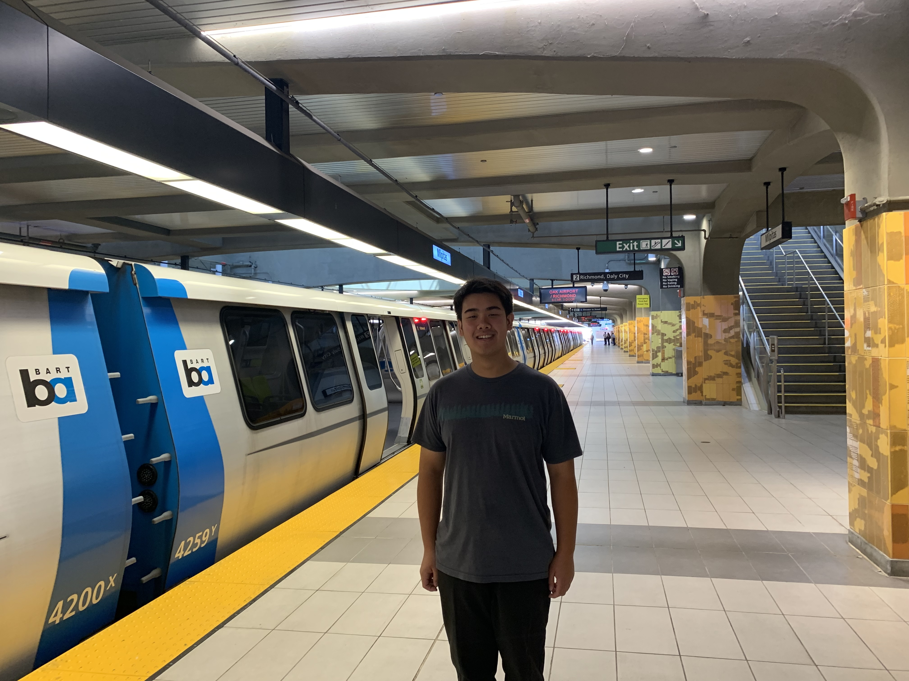
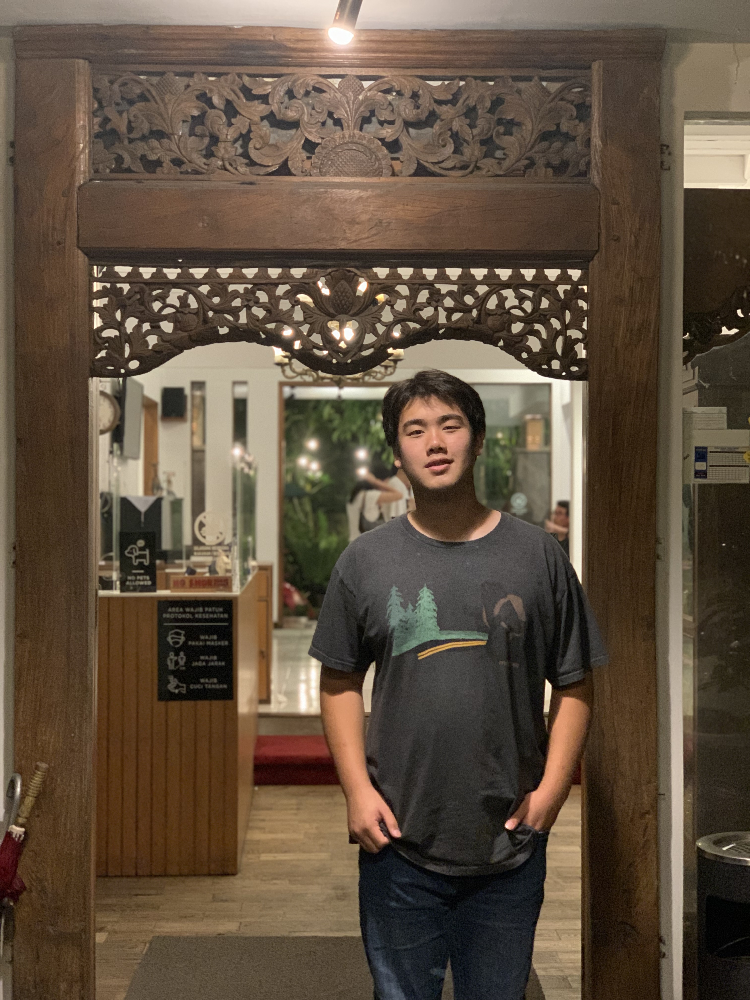
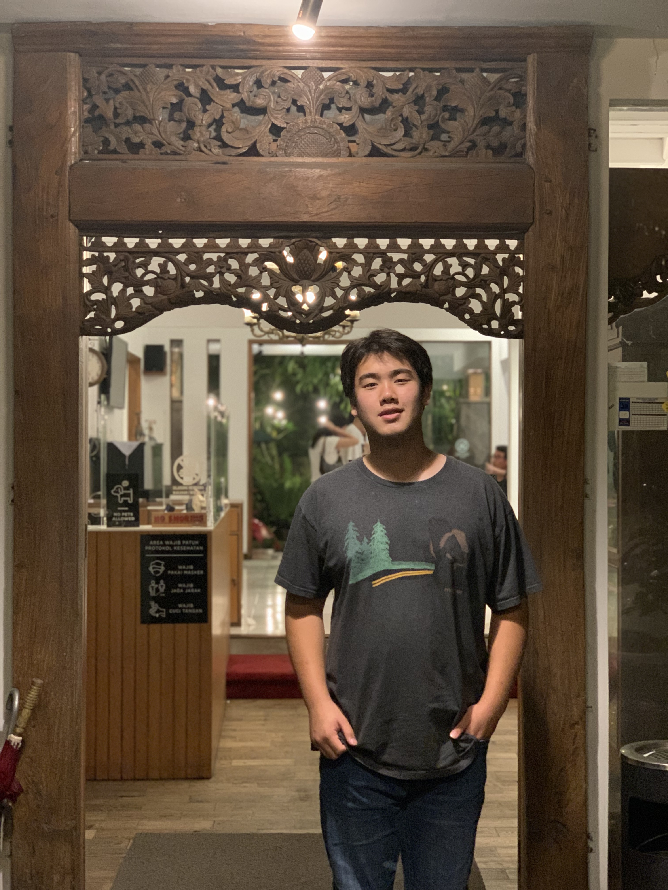
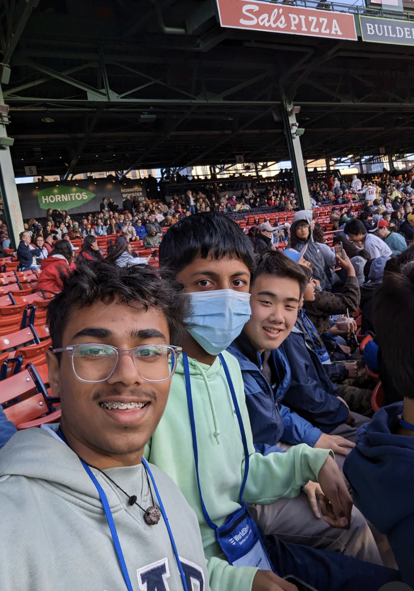

Hey! I'm Ethan. Feel free to read!
Food
I love eating porridge!
口水雞 - Chicken Dish

- We can't forget about meatballs!
- Cornbread, potatoes, and cream spinach!
From the school lunch line, I like "arroz con leche" and the "breakfast burrito."

Hobbies
- I collect coins! I'm trying to complete a book of half dollars from different years and different mints!
I also grow vegetables! Broccoli is my favorite vegetable to grow.

When I have an hour to spare, I like taking the train (our home is located next to a train station).
- I also enjoy walking around the neighborhood!
Movies/Shows
I first watched Inside Out while I was on a trip to visit my grandparents (a movie can really help when your flight takes 17 hours). I really enjoyed it!

Another favorite of mine is Night in the Museum. The movie is about a night guard who realizes that New York's Museum of Natural History actually comes alive after sunset. The movie is incredibly humorous, and I find it quite interesting to imagine what it would be like if somebody could stumble into a painting or interact with taxidermy.

- Last but not least, we have National Treasure. The set of three movies is incredibly exhilarating and mysterious. There's also a new show that came out related to it!
Although it may sound strange, I also enjoy watching children's shows. My favorites include Bluey, Sesame Street, Peppa Pig, and Hey Duggee.

- I do not enjoy watching Shrek.
Travel Destinations
Where have I been?
My family comes from Indonesia, and because many of my relatives (including my grandparents) reside in Jakarta, I have visited the city before. Among my favorite things to do there are spend time with family, visit the market, and look at monkeys on the street.
 
- Singapore is only separated from Batam, Indonesia by several miles of water. As a result, I have passed through the strait to visit.
Last year, I had the pleasure of going on my middle school's 8th grade trip to Massacusetts.

Where would I like to travel?
- China is a placed I have always been curious about? Many of my relatives have resided there sometime in their life, and I truly wonder what it is like.
- Germany has such a cool language.
Fun Fact
Email is my favorite means of communication.
What do I hope to learn in this class?
In this class, I hope to improve skills necessary for AP CSP next year. Also, I think it would be interesting to look into machine learning—I haven't done the extra credit assignment yet!